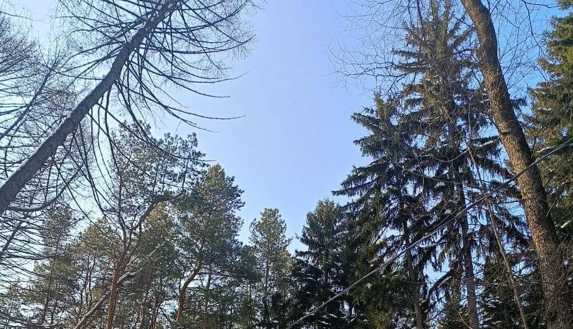
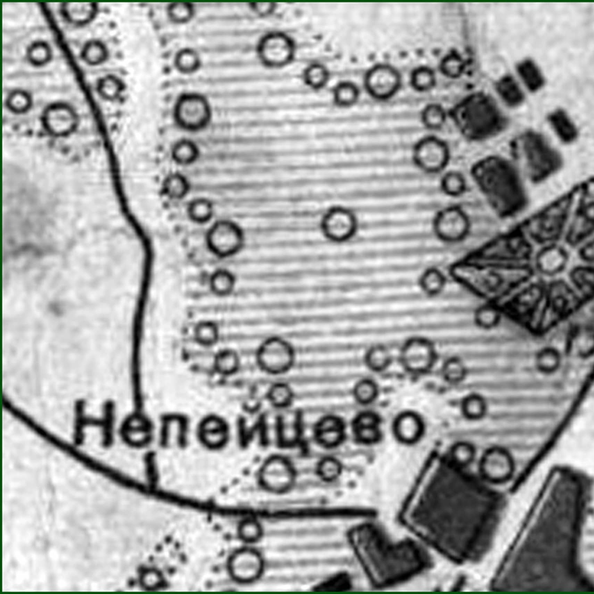
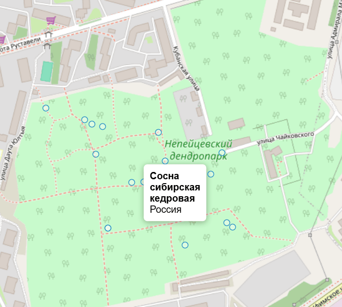

Непейцевский дендропарк
Непейцевский дендропарк — одно из самых живописных мест города, где можно познакомиться с разнообразием редких растений, насладиться прогулками среди зелёных аллей и отдохнуть на природе.
Парк объединяет историческое наследие и уникальную флору, создавая атмосферу спокойствия и уединения в городской среде.

Узнайте историю создания дендропарка и познакомьтесь с его флорой

История парка
Флора и гидКак добраться?
- Улица Шота Руставели
- Улица Даута Юлтыя
- Улица Уфимское Шоссе